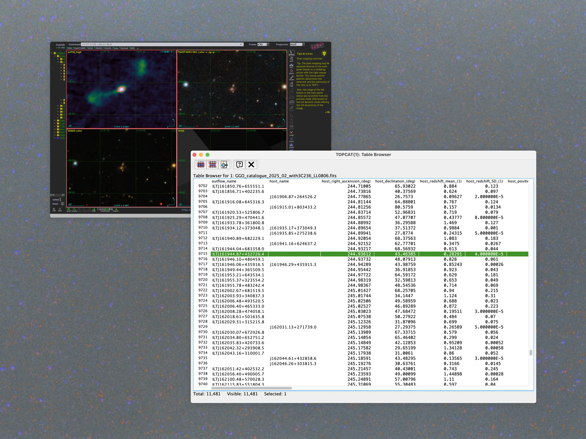
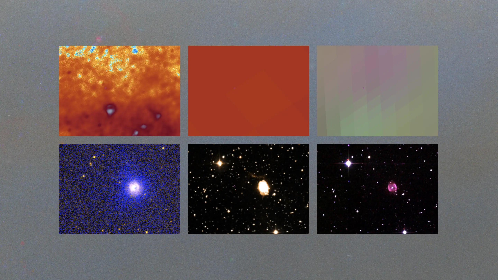
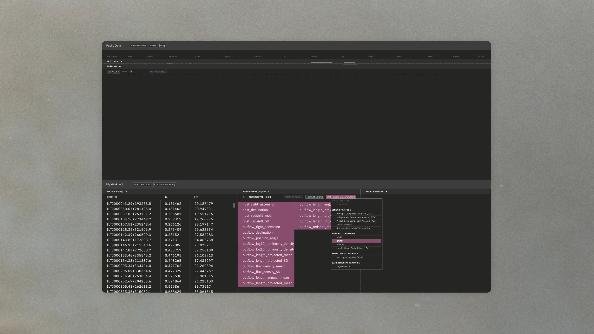
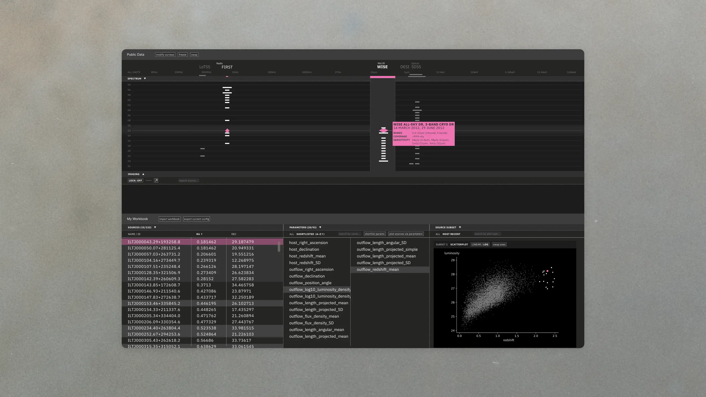
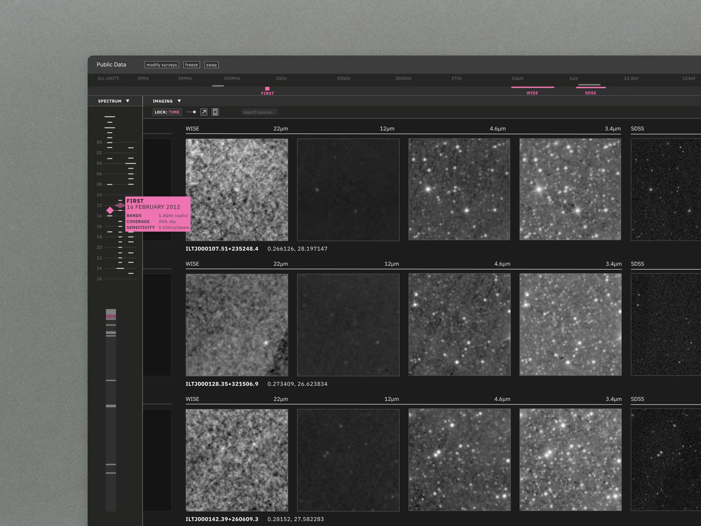

Digital Sky Surveys
Challenge
Observational astronomers and astrophysicists work across different frequency ranges (“bands”) along the electromagnetic spectrum, specializing in certain bands and their measuring instruments. Various facilities/observatories house these instruments, releasing data at various cadences as part of different sky surveys. This data takes two forms: images of the cosmos capturing potential astronomical objects, and quantitative measurements of these potential objects that represent images abstractly.

Scientists face a Big Data problem given the sheer volume of data available—across multiple frequencies, taken at different times, and measuring different properties—whose querying is fragmented and tied to positional coordinates, making it challenging to get a sense of how one is situated within the data. Image artifacts (e.g. noise) complicate this further, trickling down into catalogs and potentially biasing measurements. Data validation and verification is thus crucial so that researchers can confirm that different representations of a potential object across bands are correctly correlated for anomaly detection and hypothesis formation.

Scope
How to absorb enough astro terminology and gain a sense of scientists’ methodologies within 10 weeks? I spent the first 7 in conversation with our science partners, radio astronomers at Caltech who worked across three subdomains, to clarify shared approaches and position the project within their methodologies. During the final 3 weeks I ran co-design sessions and iterative user-testing to validate the prototype.
Solution
A frontend UX probe in Figma based on close observation of researchers’ working methods and habits. The probe makes explicit the availability and coverage of public sky survey data over time and frequency, and incorporates a dimensionality reduction flow so that researchers can define potential objects of interest, drawing from personal expertise and intuition.


Influenced by the interaction affordances of Rubik’s cubes and video game navigation, the probe enables locking navigation on either time or frequency to view potential objects systematically. Each row of images correlates to an individual potential cosmic object for direct comparison. Additional features enable close-up zooming in on images.

Impact
Designed as a UX probe rather than a production deliverable, the prototype unites fragmented, high-dimensional survey data into a single interface via the locking affordance. Validated by our Caltech stakeholders and later presented to their broader research group, the work opened up a follow-up conversation about future directions and opportunities for LLM integration to make researcher workflows and analysis more reproducible.